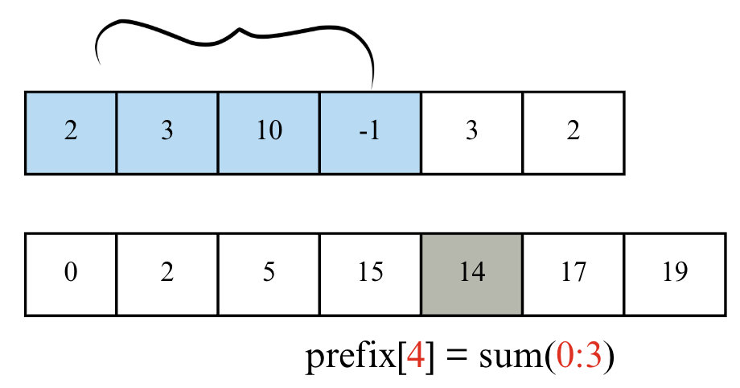
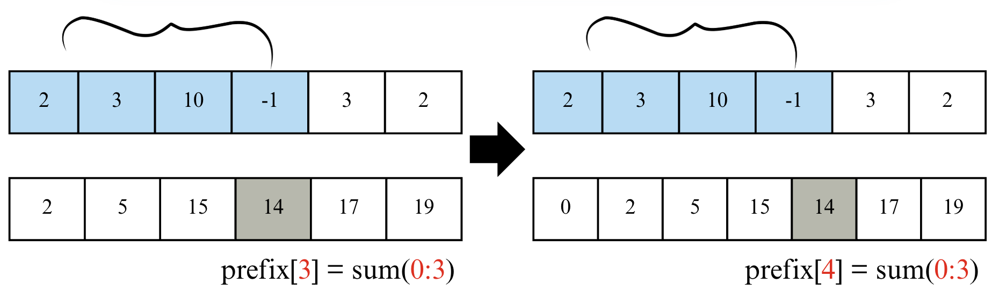
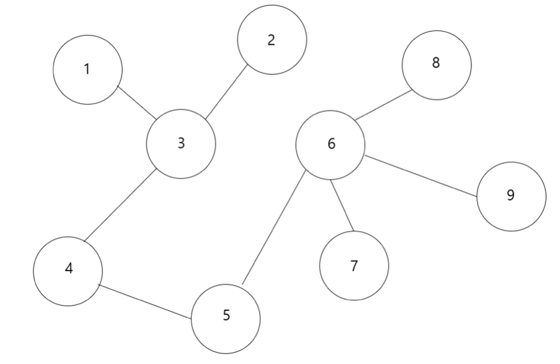
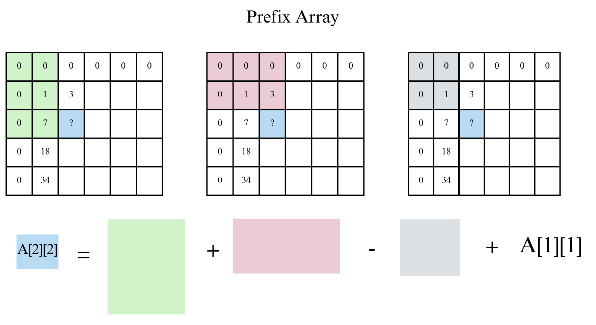
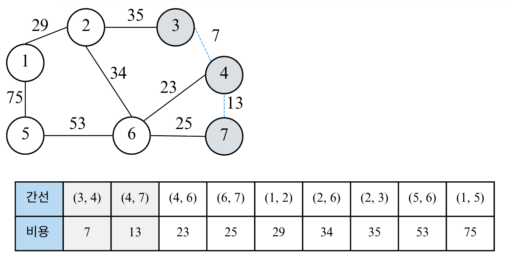
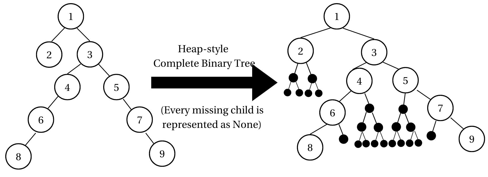

Lecture 10-1. Prefix Sum (누적 합)#
학습 목표#
Prefix(접두)의 의미를 이해한다.
누적 합 배열(Prefix Sum Array)을 직접 구현한다.
누적 합을 활용해 구간 합(range sum)을 빠르게 계산한다.
2차원 누적 합 (Integral Image)의 정의와 구축 공식을 이해한다.
직사각형 영역 합을 \(O(1)\)에 질의하는 방법을 익힌다.
Prefix XOR의 성질 (결합/교화/자기소거)을 이해하고, 구간 XOR/사각형 XOR 질의를 구현한다.
해시맵을 이용해 “합/XOR이 특정 값이 되도록 하는 구간 개수”를 \(O(N)\)에 세는 패턴을 익힌다.
Prefix란?#
Prefix는 “접두사”라는 뜻으로, 어떤 수열의 처음부터 특정 위치까지의 부분 구간을 의미한다.
{kind=link}
예를 들어, 배열이 [1, 2, 3, 4]일 때
구간 |
값 |
설명 |
|---|---|---|
첫 번째 원소까지의 합 |
1 |
(1) |
두 번째 원소까지의 합 |
3 |
(1 + 2) |
세 번째 원소까지의 합 |
6 |
(1 + 2 + 3) |
네 번째 원소까지의 합 |
10 |
(1 + 2 + 3 + 4) |
이렇게 “앞에서부터 누적된 합”을 담은 새로운 배열을 Prefix Sum Array라고 부른다.
문제 유형 |
예시 |
|---|---|
1D 누적 합 |
구간 합, 평균 구하기 |
2D 누적 합 |
영역의 합 (e.g. 이미지 누적 밝기) |
Prefix XOR |
XOR 구간 연산 문제 |
Prefix Min/Max |
부분 최솟값, 최댓값 추적 |
문자열 Prefix |
접두사 비교, KMP 전처리 |
1D Prefix Sum#
기본 소스 코드
data = [1, 2, 3, 4, 5]
n= len(data)
px = [0]*n
# px[i]: data[0] ~ data[i]까지의 함 (i is included)
for i in range(n):
px[i] = px[i-1] + data[i]
print("Prefix Sum:", px)
출력:
Prefix Sum: [1, 3, 6, 10, 15]
위의 코드에서는 prefix[i] = sum[i-1] + A[i]로 계산하였다. 하지만 보통은 아래와 같은 방식으로 prefix sum array를 계산한다. 문제 풀이 시에는 계산을 단순하게 하기 위해 보통 prefix 배열을 길이 N+1로 만들고, prefix[0] = 0으로 초기화한다. 즉, prefix[0]이 없는 경우,
arr[0]~arr[3] 구간합 = px[3] arr[1]~arr[3] 구간합 = px[3] - px[0]
으로 prefix[0]이 arr[0]을 포함하고 있어 인덱스 계산이 번거롭게 달라져 계산 실수할 수 있다.
{kind=link}
따라서 위의 그림처럼 prefix[0]= 0을 포함하여 일관성있게 1-indexed problems에서 [i:j]구간합을 prefix[j+1]-prefix[i]로 계산할 수 있게 코드를 구현한다. 여기서 1-indexed problems
정의 1
P[0] = 0, P[i+1] = P[i] + A[i] (배열 A는 0-based)
구간합: sum(a…b) = P[b+1] - P[a] (1-indexed problem a, b포함)
Prefix 배열의 첫 번째 원소를 0으로 두기
문제 풀이 시에는 계산을 단순하게 하기 위해 보통 prefix 배열을 길이 N+1로 만들고, prefix[0] = 0으로 초기화한다. 즉, prefix[i]에는 인덱스 [0, i-1]까지의 누적합 이 저장된다.
prefix[1] = prefix[0] + data[0] → data[0]까지의 합
prefix[2] = prefix[1] + data[1] → data[0] + data[1]까지의 합
…
prefix[i] = data[0]부터 data[i-1]까지의 합
arr = [1, 2, 3, 4, 5, 6, 7, 8, 9, 10]
def prefix_sum(arr):
prefix = [0] * (len(arr)+1)
for i in range(1, len(arr)+1):
prefix[i] = arr[i-1] + prefix[i-1]
return prefix
def range_sum(prefix_arr, a, b):
# a, b: index
'''
[a, b] 모두 포함되어야하므로,
prefix_arr[b+1] = b 포함
prefix_arr[a] = a 전까지 더함
'''
return prefix_arr[b+1] - prefix_arr[a]
prefix_arr = prefix_sum(arr)
a=1; b=3
print(f"Arr: {arr}")
print(f"Prefix: {prefix_arr}")
print(f"Sum from {a} to {b} is {range_sum(prefix_arr, a, b)}")
출력:
Arr: [1, 2, 3, 4, 5, 6, 7, 8, 9, 10]
Prefix: [0, 1, 3, 6, 10, 15, 21, 28, 36, 45, 55]
Sum from 1 to 3 is 9
Prefix Sum을 왜 쓰는가? 구간합#
어떤 구간의 합을 구해야할 때, 매번 for문을 돌면 \(O(N)\)이 걸린다. 하지만 prefix sum을 미리 계산하면 한 번의 뺄셈으로 구간 합을 \(O(1)\)에 계산 가능하다.
아래 예시를 보자.
{kind=link}
구간 합 공식은 다음과 같다.
배열 인덱스가 0부터 시작한다고 하고 0-based array에서 preifx[0]=0, len(prefix)= N+1인 prefix array를 이용한 (i, j)의 구간합은 아래와 같다.
Summary
“Prefix sum”
정의: 누적 합 배열로, 반복 계산을 한 번의 뺄셈을 줄여준다.
한 번 계산해두면, 구간 합을 \(O(1)\)에 처리 가능
prefix_sum[j] = prefix_sum[j-1] + data[j-1]
1-indexed problem에서, range_sum[i:j] = prefix_sum[j+1] - prefix_sum[i]
2D Prefix Sum#
1D에서 누적 합을 미리 구해 구간 합을 빠르게 계산하듯, 2D에서도 누적 합 테이블을 만들면 임의의 직사각형 영역의 합 을 한 번에 구할 수 있다. 컴퓨터 비전에서는 적분 영상(Integral Image)로도 불린다.
패딩 (1-based) 정의#
아래는 1-based prefix를 계산하는 과정이다.
Step 1
크게 헷갈리지 않도록 행/열 모두 1칸씩 0을 패딩해 P를 만든다.
원본 행렬: A[1…H][1…W]
누적 합: P[0..H][0..W], 경계는 0
Step 2
나머지 prefix P 어레이의 빈칸은 어떻게 계산할 수 있을까?

나머지 prefix[i][j]는 아래 수식으로 계산하여 채워놓으면 된다.
Prefix P array for 2D matrix source code
import numpy as np
A = np.arange(1, 13).reshape((3, 4))
def build_prefix_sum(array):
N, M = len(array), len(array[0])
P = [[0]*(M+1) for _ in range(N+1)] # zero padded
for y in range(1, N+1):
for x in range(1, M+1):
P[y][x] = array[y-1][x-1] + P[y-1][x] + P[y][x-1] - P[y-1][x-1]
return P
print(build_prefix_sum(A))
위와같이 prefix sum matrix을 구한후에 특정 영역의 직사각형 합을 구하는 경우에 여러번 다른 구간을 계산할때도 O(1) 시간 복잡도로 구할 수 있다.
외우기 쉬운 방법은, 시작점인 (y1, x1)이 inclusive 사각형의 덧셈 뺄셈을 할 때 y1-1과 x1-1과 관련된 사각형을 더하고 빼주는 것이다.

prefix example 1
예시 문제
아래 3x4 매트릭스 A 행렬의 (y1, x1) ~ (y2, x2) 영역의 직사각형 합을 구하여라
import numpy as np
from typing import List
A = np.arange(1, 13)
# print(A)
A = A.reshape((3, 4))
# print(A)
# print(type(A))
def build_prefix2d(A: List[List[int]]) -> List[List[int]]:
H, W = len(A), len(A[0])
P = [[0]*(W+1) for _ in range(H+1)]
for y in range(1, H+1):
row = A[y-1]
for x in range(1, W+1):
P[y][x] = row[x-1] + P[y-1][x] + P[y][x-1] - P[y-1][x-1]
return P
# 1-based inclusive rectangle array
def rect_sum(P: List[List[int]], y1:int, x1:int, y2: int, x2:int) -> int:
return P[y2][x2] - P[y1-1][x2] - P[y2][x1-1] + P[y1-1][x1-1]
P = build_prefix2d(A)
print(rect_sum(P, 2, 2, 3, 4)) # 43
정의 2
2D Prefix Sum
정의: A는 0-based (크기 HxW)
누적합: P는 (H+1) x (W+1) 크기.
구축식 (0-based A 배열 기준): P[y+1][x+1]=P[y+1][x]+P[y][x+1]−P[y][x]+A[y][x]
구간합: Sum(y1, x1, y2, x2) = P[y2][x2] - P[y1-1][x2] - P[y2][x1-1] + P[y1-1][x1-1](1-indexed problem 두 좌표 포함)
실전 문제#
solution
import sys
input = sys.stdin.readline
N, Q = map(int, input().split())
data = []
def create_prefix_sum(data):
global px
n = len(data)
px = [[0]*(n+1) for _ in range(n+1)]
for y in range(1, n+1):
for x in range(1, n+1):
px[y][x] = px[y-1][x] + px[y][x-1] - px[y-1][x-1] + data[y-1][x-1]
def rect_sum(y1, x1, y2, x2):
'''
1-indexed inclusive sum
'''
return px[y2][x2] - px[y1-1][x2] - px[y2][x1-1] + px[y1-1][x1-1]
if __name__ == "__main__":
for _ in range(N):
data.append(list(map(int, input().split())))
create_prefix_sum(data) # global prefix array 생성
for _ in range(Q):
x1, y1, x2, y2 = map(int, input().split())
'''
구하고 싶은 것: 1-indexed
'''
print(rect_sum(x1, y1, x2, y2))
# print(rect_sum(y1-1, x1-1, y2-1, x2-1))
2D prefix range sum tip
문제는 보통 (1-based)로 들어오므로 P를 (H+1)×(W+1)로 두고 경계 0을 고정하는 습관을 들이자. 0-based로 억지로 처리하면 경계 조건이 더 번거롭다.
1D Prefix XOR#
XOR#
XOR (Exclusive OR) 은 두 값의 비트가 서로 다르면 1, 같으면 0을 만드는 비트 연산이다.
a |
b |
a ^ b |
|---|---|---|
0 |
0 |
0 |
0 |
1 |
1 |
1 |
0 |
1 |
1 |
1 |
0 |
다음과 같은 예시를 보자.
5 ^ 3
5 = 101 (2진수)
3 = 011 (2진수)
-------------
110 = 6
단순 합의 경우는 개수나 길이, 비용의 총합에 사용되지만 XOR은 언제 사용될까? 다음과 같은 용도가 있다.
연산 |
표현할 수 있는 개념 |
|---|---|
Sum(+) |
개수, 길이, 비용, 총합 |
XOR(^) |
배열에서 하나만 남는 값 찾기, 비트 연산 알고리즘, 토글 변화 추적, 암호학 |
예를 들어, 배열에서 모두 짝으로 등장하지만 단 하나만 혼자 나오는 값을 찾고 싶을 때, XOR을 사용하면 짝은 서로 소거되므로 쉽게 풀 수 있다. 또한 스위치를 on/off 토글할 때 “state ^= 1”로 UI, LED 제어 등 변경 등에서 많이 사용된다. 또한 XOR 는 정보 손실 없이 섞어낼 수 있는데, 아래와 같이 되돌림이 가능하다.
cipher = message ^ key
message = cipher ^ key (되돌림 가능!)
마지막으로 2D/1D 구간 XOR 질의에서 구간 합처럼 구간 XOR을 O(1)으로 계산할 수 있다.
XOR 성질#
성질 |
의미 |
예시 |
|---|---|---|
교환/결합 |
순서 상관 없음 |
(a^b)^c = a^(b^c) |
자기 소거 |
같은 값 두 번 XOR하면 사라짐 |
a ^ a = 0 |
항등원 |
0과 XOR하면 값 그대로 남음 |
a ^ 0 = a |
가장 중요한 성질은 XOR은 중복된 값을 없앤다 는 것이다. 이 성질을 이용하여 prefix XOR 배열을 만들 수 있다.
Prefix XOR#
아래와 같은 배열이 있을 때,
a = [3, 8, 2, 6]
1D prefix XOR 배열을 다음처럼 만든다고 하자:
px[i] = a[i] ^ a[2] ^ ... ^ a[i] (1-based 가정)
예를 들어,
px[1] = 3
px[2] = 3 ^ 8
px[3] = 3 ^ 8 ^ 2
px[4] = 3 ^ 8 ^ 2 ^ 6
여기서 구간 XOR (i…j) (i\(<\)j) 를 구하고 싶을때 어떻게 계산해야할까?
px[j] = a[1] ^ a[2] ^ ... ^ a[j]
px[i-1] = a[1] ^ a[2] ^ ... ^ a[i-1]
위의 둘을 XOR 하면,
px[j] ^ px[i-1]
= (a[1] ^ ... ^ a[j]) ^ (a[1] ^ ... ^ a[i-1])
XOR의 자기소거 특징에 의해, 공통 부분이 모두 사라진다. 따라서 다음만 남는다.
= a[i] ^ a[i+1] ^ ... ^ a[j]
= XOR(i..j)
따라서 구간 (i, j)의 XOR은 다음과 같이 구할 수 있다.
즉, prefix XOR은 앞에서부터 XOR 값을 저장해두고 중복되는 앞부분을 XOR로 지워서 구간 XOR를 빠르게 구하는 방법이다. 시간 복잡도는 전처리때 O(N)이 걸리고 각 질문마다 O(1)으로 딱 한 번 계산하기 때문에 속도가 빠르다.
예시 문제
배열 a = [3, 8, 2, 6]에서 1-indexed (2, 4)의 XOR은?
- P = [0, 3, 11, 9, 15] (편의상 앞에 0패딩)
- 답: P[4] ^ P[1] = 15 ^ 3 = 12
XOR 정리
XOR 성질 복습
교환/결합: a ^ b = b ^ a, (a^b) ^ c = a ^ (b^c)
자기 소거: a ^ a =0,
항등원: a ^ 0 = a
따라서, 1D 배열에서 P[i] = a[i] ^ … ^ a[i] (1-based)로 두면,
Source code for prefix XOR
from typing import List
a = [3, 3, 8, 2, 6]
def build_prefix_xor(a: List[int]) -> List[int]:
px = [0] * (len(a)+1)
for i in range(1, len(a)+1):
px[i] = px[i-1] ^ a[i-1]
return px
def range_xor(px: List[int], i:int, j:int) -> int:
return px[j]^px[i-1]
px = build_prefix_xor(a)
print(range_xor(px, 1, 3)) # 8
2D Prefix XOR#
위의 그림을 보면, 1-based XOR array에서 (0,0) ~ (i, j) 까지 구간 XOR을 계산하려면 prefix sum을 계산할 때와 비슷하게 계산가능하다. 다만 이경우에는 모두 ‘^’로 처리해주면된다. 그림을 잘 살펴보면 구간 XOR에서 총 4개의 구간을 XOR 연산 시켜줬을 경우 모든 구간이 홀수번 만 반복되어 정확히 한번에 계산가능하다.
또한 구간 XOR은 아래 그림과 같이 계산가능하다.
{kind=link}
\begin{algin*} RectXOR(y_1,x_1,y_2,x_2) = PX[y_2][x_2] ;\hat{\ }; PX[y_1-1][x_2] ;\hat{\ }; PX[y_2][x_1-1] ;\hat{\ }; PX[y_1-1][x_1-1]. \end{align*}
tip
각 셀의 기여 횟수의 짝/홀만이 중요하고, 중복되면 XOR에서 상쇄된다(자기소거). 따라서 포함-배제의 부호 대신 “짝수번 등장 → 0, 홀수번 등장 → 남음” 패턴이 그대로 작동한다.
Source code for 2D Prefix XOR
from typing import List
def build_prefix2d_xor(A: List[List[int]]):
H, W = len(A), len(A[0])
PX = [[0]*(W+1) for _ in range(H+1)]
for y in range(1, H+1):
for x in range(1, W+1):
PX[y][x] = (
A[y-1][x-1]
^ PX[y-1][x]
^ PX[y][x-1]
^ PX[y-1][x-1]
)
return PX
# 1-based inclusive rectangle XOR
def rect_xor(PX: List[List[int]], y1: int, x1: int, y2: int, x2: int) -> int:
return (
PX[y2][x2]
^ PX[y1-1][x2]
^ PX[y2][x1-1]
^ PX[y1-1][x1-1]
)
# quick self-test
A = [
[1,2,3,4],
[5,6,7,8],
[9,10,11,12],
]
PX = build_prefix2d_xor(A)
print(rect_xor(PX, 2,2, 3,4))
Summary
누적 합/ XOR 전처리: 1D는 \(O(N)\), 2D는 \(O(HW)\)
질의: 1D/2D 모두 \(O(1)\)
개수 세기(맵): 한 번의 스캔 \(O(N)\), 공간 \(O(U)\) (서로 다른 prefix 값의 수)
문자열 Prefix#
연습 문제#
합이 K인 부분 배열의 개수#
solution
prefix[i] = a[1]+…+a[i]라 할 때, prefix[j] - prefix[i-1] = K ↔ prefix[i-1] = prefix[j] - K. 따라서 현재 prefix 값을 키로 저장하며 진행하면 전체 \(O(N)\)에 정답을 센다.
from collections import defaultdict
from typing import List
class Solution:
def subarraySum(self, nums: List[int], K: int) -> int:
ans = 0
freq = defaultdict(int)
freq[0] = 1 # prefix==0 초기 상태
running = 0
for x in nums:
# prefix[i] = prefix[j+1] - K
running += x
ans += freq[running - K]
freq[running] += 1
return ans
nums = [1, 1, 1]; K=2
sol = Solution()
print(sol.subarraySum(nums, K))
XOR Queries of a Subarray#
구간 합 구하기 4#
[Baekjoon 11659]
구간 합 구하기 5#
[Baekjoon 11660]